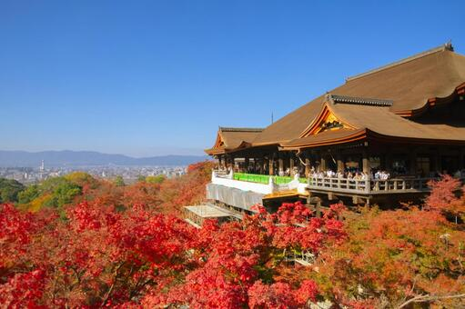
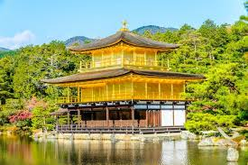
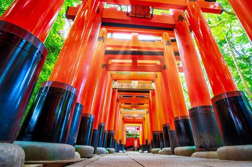
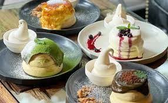

清水寺
「清水の舞台」で知られる、京都を代表する寺院。
1. 圧倒的な絶景「清水の舞台」
やはり最大の見どころは、本堂から張り出した「清水の舞台」です。
- 釘を使わない建築技術： 断崖絶壁に建つこの舞台は、「懸造り（かけづくり）」という日本古来の工法で、釘を一本も使わずに組み上げられています。巨大なケヤキの柱が整然と並び、舞台を支える姿を下から見上げると、その迫力に圧倒されます。
- 京都市街のパノラマ： 舞台の上に立つと、京都の街並みが一望できます。遠くには京都タワーも見え、古都の風情と現代の景色が融合した絶景を楽しめます。「清水の舞台から飛び降りる」ということわざの由来となった場所でもあります。
2. 名前の由来となった「音羽の滝」
本堂の東側、石段を下りたところにあるのが「音羽の滝（おとわのたき）」です。ここから湧き出る清らかな水が、清水寺の名前の由来となりました。
3筋に分かれて落ちる水には、それぞれご利益があると言われています。
- 学業成就
- 恋愛成就
- 延命長寿
長い柄杓（ひしゃく）を使ってこの水を受け、願いを込めながら口にすることで、そのご利益を授かるとされています。
3. 荘厳な入り口「仁王門」と「三重塔」
参道の坂（清水坂）を登りきった場所で参拝者を迎えるのが、鮮やかな朱塗りの「仁王門（におうもん）」です。
その奥には、高さ約31メートルと国内最大級の高さを誇る「三重塔」がそびえ立ちます。この鮮やかな朱色は、空の青や周囲の木々の緑とのコントラストが非常に美しく、絶好の撮影スポットとなっています。
4. 暗闇の中の体験「随求堂の胎内めぐり」
仁王門の近くにある随求堂では、「胎内めぐり」というユニークな体験ができます。
お堂の下にある真っ暗な空間を、大随求菩薩（だいずいぐぼさつ）の胎内に見立て、数珠を頼りに手探りで進みます。暗闇の中で光る石を見つけて回すと願いが叶うと言われており、深い静寂の中で「生まれ変わり」のような感覚を味わえます。
5. 四季折々の表情
清水寺は、訪れる季節によって全く違う表情を見せてくれます。
- 春： 山全体が桜色に染まり、舞台から見下ろす桜の雲海は圧巻です。
- 秋： 境内が燃えるような紅葉に包まれます。
- 夜の特別拝観： 春・夏・秋に行われるライトアップでは、夜空に向かって放たれる青い一筋の光（観音様の慈悲を表す光）が幻想的な雰囲気を作り出します。
住所: 京都府京都市東山区清水１丁目２９４
拝観時間: 9:00 ～ 18:00
料金: 大人500円

金閣寺
黄金に輝く舎利殿が美しい、世界遺産の寺院。
1. 異なる様式の融合「舎利殿（金閣）」
やはり主役は、池のほとりに建つ金色の「舎利殿（しゃりでん）」です。実はこの建物、3つの層（階）でそれぞれ建築様式が異なるという非常に珍しい造りをしています。
- 一層（1階）：寝殿造り
「法水院（ほっすいいん）」と呼ばれ、貴族の邸宅風の優雅な造りです。ここだけ金箔が貼られておらず、素木（しらき）の落ち着いた佇まいが特徴です。 - 二層（2階）：武家造り
「潮音洞（ちょうおんどう）」と呼ばれ、武士の力強さを表しています。 - 三層（3階）：禅宗仏殿造り
「究竟頂（くっきょうちょう）」と呼ばれ、禅宗様の格式高い窓枠（花頭窓）が見られます。
これらを違和感なく調和させた姿は、公家・武家・仏教の文化を融合させた義満の権力と美意識の象徴です。
2. 水面に映る「逆さ金閣」と鏡湖池
金閣のすぐ手前に広がる大きな池は「鏡湖池（きょうこち）」と呼ばれます。
その名の通り、鏡のように水面に金閣を映し出すよう設計されており、天気の良い風のない日には、実物と水面の「逆さ金閣」が上下に輝く幻想的な光景が見られます。池の中に配置された大小の島々や名石も、極楽浄土の世界観を表現しています。
3. 立身出世のパワースポット「龍門の滝」
金閣の裏手を回って山道を少し登ると現れるのが「龍門の滝（りゅうもんのたき）」です。
滝壺のあたりには、上を向いた尖った石が置かれています。これは「鯉魚石（りぎょせき）」と呼ばれ、「鯉が滝を登りきると龍になる」という中国の故事「登竜門」を表しています。出世や成功を願う人々に人気のスポットです。
4. 詫び寂びの世界「夕佳亭」
順路の終盤にある素朴な茶室が「夕佳亭（せっかてい）」です。
「夕日に映える金閣が佳（よ）い」ということから名付けられました。豪華絢爛な金閣とは対照的に、茅葺き屋根の落ち着いた「詫び寂び」の世界を感じられます。有名な「南天の床柱」など、数寄屋造りの名建築としても知られています。
5. 冬だけの絶景「雪化粧の金閣」
金閣寺が最も美しくなると言われているのが、雪の日です。
- 白と金のコントラスト： 屋根や庭園に積もった真っ白な雪と、建物の黄金色が織りなす対比は、言葉を失う美しさです。
- 希少性： 京都市内でも雪がしっかりと積もる日は年に数回あるかないかです。その希少性も相まって、雪の日の朝には多くの写真愛好家が訪れます。
住所: 京都市北区金閣寺町1
拝観時間: 9:00 ～ 17:00
料金: 大人 500円

伏見稲荷大社
千本鳥居が有名な、世界遺産の神社。
1. どこまでも続く赤のトンネル「千本鳥居」
伏見稲荷の代名詞といえば、やはり「千本鳥居（せんぼんとりい）」です。
本殿の背後から奥社へと続く参道に、隙間なく並べられた朱色の鳥居。これは、願い事が「通る（叶う）」、または通ったお礼として奉納されたものです。
- 朱色の魔力： 朱色は魔除けの色であり、生命の躍動を表しています。
- 二股の分かれ道： 千本鳥居の入り口付近は2つのルートに分かれていますが、どちらを通っても同じ場所に辿り着きます。右側通行が基本とされています。
2. あなたの願いは叶う？「おもかる石」
千本鳥居を抜けた先、「奥社奉拝所」にあるのが有名な「おもかる石」です。
一対の石灯籠の前で願い事を念じ、灯籠の頭にある空輪（丸い石）を持ち上げてみてください。
- 予想より軽ければ： 願い事が叶う日が近い
- 予想より重ければ： 叶うまでにはまだ努力が必要
単純ながらもドキドキする、参拝者に大人気の運試しスポットです。
3. 表情豊かな「お稲荷さんの狐（きつね）」たち
境内には狛犬（こまいぬ）の代わりに、神様の使いである「狐」の像が至る所に鎮座しています。
よく見ると、狐たちは口にそれぞれ違うものをくわえています。
- 稲穂： 五穀豊穣
- 巻物： 知恵
- 鍵： 米蔵の鍵（富の象徴）
- 玉： 霊徳（神様の力）
どんなアイテムをくわえているか、注目して歩くのも楽しみの一つです。
4. 絶景とハイキング「稲荷山（お山めぐり）」
千本鳥居を抜けてさらに奥へ進むと、稲荷山全体を巡る参拝コース（約4km・2時間程度）が始まります。
中腹にある「四ツ辻（よつつじ）」というスポットは見晴らしが良く、京都市内を一望できる絶景ポイントです。ここから見る夕暮れは格別で、体力に自信がある方はぜひここまで登ってみることをおすすめします。
5. 豊臣秀吉が寄進した「楼門（ろうもん）」
参拝のスタート地点でひときわ大きく構えているのが、正門にあたる「楼門」です。
この門は、天下人・豊臣秀吉が母の病気平癒を祈願し、願いが叶ったお礼として寄進したと伝えられています。神社の楼門としては規模が大きく、鮮やかな朱塗りの美しさと歴史の重みを感じさせてくれます。
住所: 京都市伏見区深草藪之内町68
拝観時間: 終日参拝可能

Panel cafe京都
祇園の風情と極上スイーツが楽しめる人気カフェ。
1. 祇園白川を臨む「絶景テラス席」
このカフェ最大の見どころは、なんといってもそのロケーションです。京都で最も絵になると言われる「祇園白川」沿いに位置しています。
特におすすめなのが、川に面したテラス席です。
- 四季折々の景色： 春は頭上に広がる桜、夏は涼しげな柳と川のせせらぎ、秋は紅葉と、座っているだけで京都の四季を肌で感じられます。
- 着物が似合う： 石畳の街並みと川の流れは、レンタル着物での撮影にもぴったりの背景です。
2. 口の中でとろける「ふわしゅわパンケーキ」
Panel Cafeの代名詞といえば、分厚いのに空気のように軽い「スフレパンケーキ」です。
注文が入ってからメレンゲを立てて丁寧に焼き上げるため、提供された瞬間が一番の食べごろです。
- 食感： ナイフがいらないほど柔らかく、口に入れると「シュワッ」と溶けてなくなる不思議な食感を楽しめます。
- 見た目： ぷるぷると揺れるほどの厚みがあり、動画映えも抜群です。
3. サクサクもちもちの新食感「クロッフル」
パンケーキと並んで人気なのが、クロワッサン生地をワッフルメーカーで焼き上げた韓国発のスイーツ「クロッフル」です。
外はサクサク、中はモチモチとした食感が特徴で、濃厚なバターの香りが食欲をそそります。食べ歩き用としての販売も行っていることがあり（※時期による）、祇園散策のお供にも最適です。
4. 京都限定「抹茶メニュー」
京都店ならではの楽しみとして、抹茶を使用した限定メニューも見逃せません。
濃厚な抹茶クリームをたっぷりとかけたパンケーキやドリンクなど、祇園の雰囲気の中で味わう和洋折衷のスイーツは格別です。甘すぎず、抹茶のほろ苦さを活かした大人の味わいが楽しめます。
住所: 京都府京都市東山区常盤町165番地 ジェイ・プライド祇園白川 1階
営業時間: 10:00～17:00